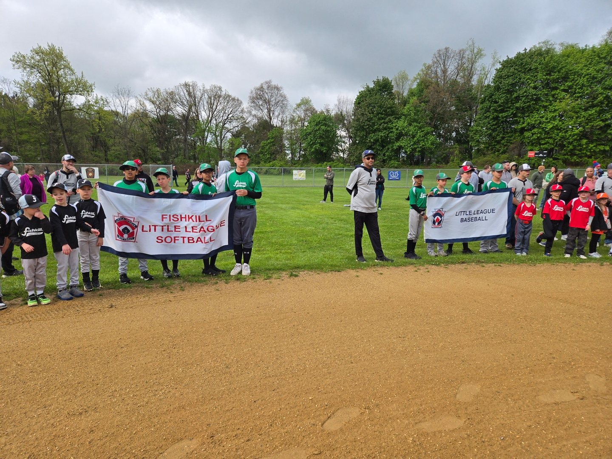

Can Beacon students play Fishkill Little League?
Students at all Beacon City School District schools are eligible to play with Fishkill Little League. If your child lives in Beacon and attends school elsewhere, use the Little League Finder to check your home or school address. League-age 7 and younger players can register regardless of residency or school attendance. Their siblings can also use that exception when the qualifying younger sibling is active in the league that season.
Beacon families can compare youth baseball divisions or girls’ softball divisions. Starting out? Explore FUN-damentals and coed Tee Ball. Our primary fields are at Shepheard Memorial Park in Fishkill.
East Fishkill
Students at Gayhead Elementary and John Jay High School are eligible. For other schools or addresses in East Fishkill, look up the address in the League Finder. The division guide shows the league ages for each baseball and softball program.
Glenham
Glenham Elementary students qualify through the Beacon City School District. Families using a home address or a school outside that district can review the league’s eligibility rules before registering.
Brinckerhoff
Brinckerhoff Elementary students are eligible. For games or practices scheduled at Doug Phillips Park, check the field map for the Front and Back diamonds.
Fishkill
Fishkill Elementary and St. Mary’s School students are eligible. If you’re new to the league, the First-Season Guide explains evaluations, schedules, equipment and what happens after registration.